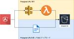

KAKEHASHI Tech Blog のフィード

Presigned URLを利用したS3へのファイルアップロード 1
1
KAKEHASHI Tech Blog
はじめに こんにちは、LINE上で動くおくすり連絡帳 Pocket Musubi というサービスを開発している種岡です。 社内システムからS3にファイルをアップロードする機能を開発することになり、Pr...
7日前

なぜバックエンドTypeScriptか？技術選定背景と実践例を紹介します
KAKEHASHI Tech Blog
カケハシの医薬品発注管理最適化領域の新規事業の開発を担当している木村です。今回は新しいサービスを構築する上で行った技術選定と実践方法の話をします。 技術選定に関しては、インフラ関連やライブラリなど選定...
15日前
スマートホームで職場(自室)環境を改善してみた
KAKEHASHI Tech Blog
こんにちは、カケハシでMusubi Insight のバックエンドエンジニアをしている高田です。 私はカケハシへの入社と同時に兵庫県移住し、現在フルリモートで勤務しています。 そのため自室=職場であり...
21日前
どのような考えで社内ローンチチェックリストを作成したか
KAKEHASHI Tech Blog
作成した背景 カケハシでは新規プロダクトや大掛かりな改修に対し、Well Architected Frameworkに基づいたレビューを行っています。一方、フレームワークは汎用的に記載されており、特に...
1ヶ月前
Storybook Addon Contexts を使って、ワンランク上のコンポーネントカタログを作ろう
KAKEHASHI Tech Blog
概要 コンポーネントのカタログを作成することができる storybook。利用している開発者は多いのではないでしょうか？ この記事では、Storybook Addon Contexts を利用して、s...
2ヶ月前
カケハシのフロントエンドエンジニアとしてのスキルアップ
KAKEHASHI Tech Blog
こんにちは、株式会社カケハシでおくすり連絡帳 Pocket Musubiの開発を担当している渡辺です。 カケハシのエンジニアはフロントエンドもバックエンドのAPIサーバーも開発を担当しています。どちら...
2ヶ月前
Amazon CognitoでSingle Sign Onを実現してみた
KAKEHASHI Tech Blog
KAKEHASHI の Musubi Insight チームでエンジニアをしている横田です。 KAKEHASHI では薬剤師さん向けに Musubi という業務システムや、BI ツールの Musubi...
2ヶ月前
まったく新しい開発体験をもたらすServerless Stackとは何か
KAKEHASHI Tech Blog
はじめに こんにちは、LINE上で動くおくすり連絡帳 Pocket Musubiというサービスを開発している種岡です。 この記事では、Serverless Stackとapollo-server-la...
2ヶ月前
⚡今すぐ見直してほしい、2021年版Lambdaチェックリスト！開発者のためのポイント30選
KAKEHASHI Tech Blog
AWS Lambdaを使えば開発者がビジネス価値に集中できる一方、それでも今までの開発と異なるポイントに気をつける必要があります。この記事では注意したい計30個のチェックポイントを紹介します。 まずは...
3ヶ月前
ググれなかった時にやっていること
KAKEHASHI Tech Blog
こんにちは、LINE上で動くおくすり連絡帳Pocket Musubiというサービスを開発している南光(@stnamco)です。 Qiitaのググって解決しづらかったこと Advent Calendar...
3ヶ月前
ETL処理がシンプルになる！AWS Glue 3.0で使えるようになったPySparkの関数紹介
KAKEHASHI Tech Blog
KAKEHASHI の、Musubi Insight チームのエンジニアの横田です。 KAKEHASHI では BI ツールの Musubi Insight という Web アプリケーションを提供して...
3ヶ月前
自分の学びをチームの学びに変えるPRレビュー活用術
KAKEHASHI Tech Blog
こんにちは、LINE上で動くおくすり連絡帳Pocket Musubiというサービスを開発している南光(@stnamco)です。 この記事では、PRレビューを利用して自分の学びをチームの学びに繋げた取り...
3ヶ月前
【TypeScript】Yaml を読み込んで（無理やり）型付けする
KAKEHASHI Tech Blog
こちらは株式会社カケハシ x TypeScriptアドベントカレンダー2021 20日目の記事です。 タイトルの通り、TypeScript ファイルに Yaml データを読み込んで型付けをする方法です...
3ヶ月前
私の開発環境2021冬⛄
KAKEHASHI Tech Blog
処方箋情報基盤開発チームエンジニアの加藤です。 この記事は カケハシアドベントカレンダー2021 の18日目の記事になります。 まえがき 今年はとくにアウトプットの速度を求められる局面が多い年でした。...
3ヶ月前
AWSのSession ManagerとFargateを用いた踏み台サーバー構築のTips
KAKEHASHI Tech Blog
こんにちは。カケハシの Musubi AI在庫管理 チームで業務委託のエンジニアとして開発を行っております山田です。こちらの記事は カケハシ Advent Calendar 2021 の17日目の記事...
3ヶ月前
テスト用にtsconfig.jsonを分けてみた
KAKEHASHI Tech Blog
「株式会社カケハシ x TypeScript Advent Calendar 2021」18日目の記事です。 https://qiita.com/advent-calendar/2021/kkhs-t...
3ヶ月前
サーバーサイドもバリデーションで楽しよう！
KAKEHASHI Tech Blog
こんにちは🎄 プラットフォームチームの石黒です。 こちらは株式会社カケハシ x TypeScriptアドベントカレンダー2021 17日目の記事です。 今回はajvによるJSON Schemaを用い...
3ヶ月前
【mabl】SaaSでテスト自動化！少人数のチームでリリース工数を半減させるまでの道のり
KAKEHASHI Tech Blog
こんにちは、カケハシでMusubi Insightのバックエンドエンジニアをしている末松です。 こちらの記事はカケハシ Advent Calendar 2021の 14 日目の記事になります。 半年ほ...
3ヶ月前
まとまったデータを小分けにして一定間隔で順番に並列リクエストする with Typescript
KAKEHASHI Tech Blog
こんにちは☃️ プラットフォームチームの石黒です。 こちらは株式会社カケハシ x TypeScriptアドベントカレンダー2021 13日目の記事です。 今回は、Typescriptでの直列リクエスト...
3ヶ月前
データ構造を踏まえてIDを設計しよう
KAKEHASHI Tech Blog
前置き こちらの記事はカケハシ Advent Calendar 2021の12日目の記事になります。 新規事業の開発を担当している木村です。 本来であれば新規事業で利用している技術を紹介したいのですが...
3ヶ月前
フルリモートワークで雑談を6ヶ月続けて感じた雑談の重要性
KAKEHASHI Tech Blog
こんにちは、Musubi開発チームで開発ディレクターを担当している門垣です。 この記事はカケハシアドベントカレンダー2021の11日目の記事になります。 カケハシではコロナ前からリモートワーク環境が整...
3ヶ月前
AI在庫管理の需要予測、発注レコメンド機能の技術スタックをご紹介
KAKEHASHI Tech Blog
こんにちは、この秋リリースしたMusubi AI在庫管理の開発チームでデータサイエンティスト・エンジニアをしている保坂です。 こちらの記事はカケハシ Advent Calendar 2021の10日目...
3ヶ月前
Amazon Connectの音声問い合わせをデバッグする
KAKEHASHI Tech Blog
こんにちは、LINE上で動くおくすり連絡帳 Pocket Musubiというサービスを開発している南光(@stnamco)です。 この記事では、Amazon Connectの音声問い合わせを実運用して...
3ヶ月前
【Blender】フロントエンドエンジニアが3Dモデリングに入門して、サービスアイコンをぴょんぴょこさせる
KAKEHASHI Tech Blog
ご挨拶 こんにちは。カケハシで「Musubi Insight」のフロントエンド開発を行っている米山と申します！ Musubi Insight 経営データを即座に見える化 この記事はカケハシアドベントカ...
3ヶ月前
スクラムチームと組織学習について考えてみる
KAKEHASHI Tech Blog
カケハシで開発ディレクター／スクラムマスターをやっている三浦です。 この記事では、スクラムのプラクティスを通じてより優れたチーム・組織を作っていくためにはスクラムだけでは不十分であり、その効果をさらに...
3ヶ月前
デザイナーが推進する、お客様のためのデザインシステム
KAKEHASHI Tech Blog
こんにちは。カケハシの主力プロダクトである「Musubi（電子薬歴 ムスビ）」開発チームでUI/UXデザインを担当している木村です。 この記事はカケハシアドベントカレンダー2021の7日目の記事になり...
4ヶ月前
アカウント管理機能の技術スタックを紹介します💁♀️
KAKEHASHI Tech Blog
こんにちは、プラットフォームチームの石黒です。あっという間に今年が終わりますね🎄 この記事は、カケハシアドベントカレンダー2021の6日目の記事です。 本日はアカウント管理機能というサービスで使用し...
4ヶ月前
カケハシSREの現在と今後
KAKEHASHI Tech Blog
この記事は、カケハシアドベントカレンダー2021の5日目の記事です。 SREチームとCorporate Engineeringチームのディレクター兼スクラムマスターをやっています、尾形です。今回はカケ...
4ヶ月前
採用したTerraformのディレクトリ構成について
KAKEHASHI Tech Blog
こちらの記事はカケハシ Advent Calendar 2021の3日目の記事になります。 こんにちは。 この秋リリースしたMusubi AI在庫管理の開発を担当している平松です。 上記プロダクトのイ...
4ヶ月前
これ一つで解決する、全120項目の再発防止策チェックポイント
KAKEHASHI Tech Blog
再発防止策が全然思いつかない...とお悩みの方へ。再発防止策は様々な視点から検討しない限り、納得のいくものにすることは困難です。そこで、複数の角度から120項目準備しました。再発防止策を起こすときに参...
4ヶ月前